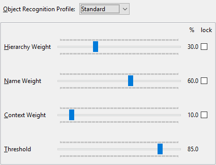

Topics
UI Toolkits
Object Mapping heuristic
Exception Handling
Screenshots
UI Toolkits

On API level
one OSGi bundle per toolkit
META-INF\MANIFEST.MF:
org.eclipse.jubula.toolkit.base.api
org.eclipse.jubula.toolkit.concrete.api
org.eclipse.jubula.toolkit.javafx.api
[...]
org.eclipse.jubula.toolkit.swt.api
org.eclipse.jubula.toolkit.rcp.api
org.eclipse.jubula.toolkit.gef.api
org.eclipse.jubula.toolkit.swing.api
org.eclipse.jubula.toolkit.html.api
Exercise06.java
Compare with Exercise04.java
@Test
public void testAbstract() {
[...]
}run Exercise06.java
DEMOnstrate
Object Mapping heuristic

Profile myProfile = MakeR.getProfileFactory()
.createProfile(name, nameWeight, pathWeight,
contextWeight, threshold);
ensembleSearchCI.setProfile(myProfile);Exception Handling
ActionE: problems with A in CAP
CheckFailedE: unexpected result in "check"-CAP
ComponentNotFoundE: problems finding C in CAP
ConfigurationE: internal; should not occurExercise07.java
@Test(expected = CheckFailedException.class)
public void testCheckFailedException() {
[...]
}run Exercise07.java
DEMOnstrate
Note: no hard JUnit dependency
Screenshots
// either RAW on client side
[...]
BufferedImage screenshot = aut.getScreenshot();
// or as file on AUT side
[...]
aut.execute(JavafxComponents.createStage()
.takeScreenshot(destination, delay,
fileAccess, scalingFactor,
createDirectories), payload);